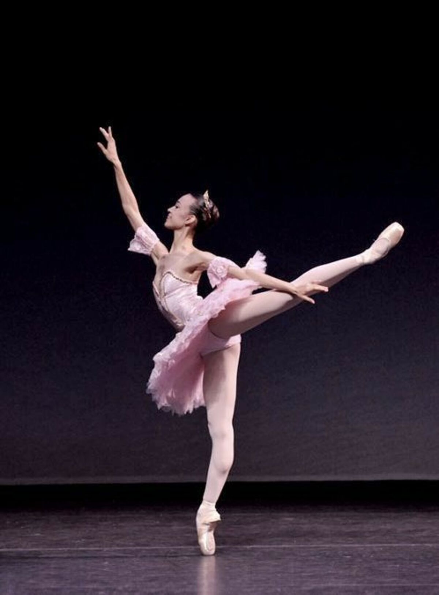
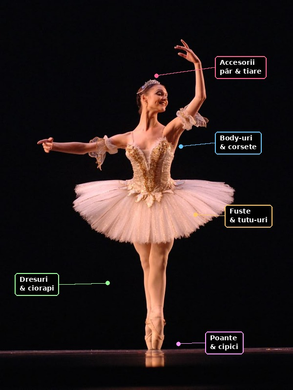

Magazinul tău de echipamente și costume de balet, recomandate de o balerină
profesionistă
Lena's Ballet Boutique este un magazin balet online născut din pasiunea Lenei pentru
dans clasic și din dorința ei de a împărtăși cu voi piesele care i-au oferit încredere pe cele mai
mari scene.
Ne adresăm tuturor pasionaților de mișcare, de la micile balerine care visează la primul lor
tutu, până la dansatoare profesioniste și școli de balet care caută standarde înalte.
Oferim o gamă completă de încălțăminte de balet (poante, cipici și
demi-poante), body-uri balet, fuste, dresuri, costume balet pentru
spectacole și concursuri, dar și accesorii dans clasic esențiale precum panglici, protecții
pentru degete, plase de păr și genți de dans.
Lucrăm cu branduri de elită precum Bloch, Capezio și Grishko, cunoscute la nivel mondial pentru calitatea materialelor și pentru
confortul pe care îl oferă dansatorilor.
Ceea ce ne face speciali sunt recomandările personale ale Lenei: fiecare produs vine cu un sfat
despre cum să-l porți sau să-l întreții, bazat pe experiența reală din sala de repetiții.
La Lena's Ballet Boutique, fiecare comandă este pregătită cu aceeași atenție pe care o acorzi
unui grand jeté perfect.
Dansul este poezia piciorului.
— John Dryden

Balerină executând un arabesque — poziție fundamentală în baletul clasic în
care dansatoarea stă pe un singur picior, cu celălalt ridicat și întins în spate.
Dacă sunteți la început de drum în dans și doriți să aflați mai multe despre tehnica de balet, vă
recomandăm resursa educațională
American Ballet Theatre
— Learn.
Programul magazinului Lena's Ballet Boutique — Sediul fizic
Perioadă
Zi
Deschidere
Pauză
După-amiază
Consultanță Lena
Zile lucrătoare
Luni
10:00 – 13:00
13:00 – 14:00
14:00 – 19:00
Da
Marți
10:00 – 13:00
13:00 – 14:00
14:00 – 19:00
Da
Miercuri
10:00 – 13:00
13:00 – 14:00
14:00 – 19:00
Nu
Joi
10:00 – 13:00
13:00 – 14:00
14:00 – 19:00
Da
Vineri
10:00 – 13:00
13:00 – 14:00
14:00 – 18:00
Nu
Weekend
Sâmbătă
10:00 – 14:00
—
14:00 – 16:00
Da
Duminică
Închis
—
Magazinul este închis în zilele de sărbătoare legală. Comenzile online
se procesează în termen de 24–48 de ore lucrătoare.
Comunitatea noastră
În acest moment, 47 de pasionați de balet navighează pe site-ul nostru. Alătură-te comunității
Lena's Ballet Boutique și descoperă echipamentul perfect pentru dansul tău!
Peste 2.300 de clienți fericiți ne-au ales ca partener de încredere pentru echipamentul lor de
balet.
Evenimente
Urmăriți evenimentele organizate de Lena's Ballet Boutique pentru comunitatea noastră de
dansatori:
—
Workshop: Prima pereche de poante — Lena vă ghidează personal în alegerea primei perechi
de poante balet, cu sfaturi despre potrivire, rigiditate și pregătirea lor pentru dans.
—
Lansare colecție de primăvară — Prezentăm noile modele de body-uri balet și
fuste din materiale reciclate, cu reduceri speciale pentru primii 30 de clienți.
—
Seară de gală: Dans și eleganță — Spectacol demonstrativ cu dansatoare profesioniste
purtând costume balet din colecția noastră. Intrarea liberă!
—
Ziua Copilului la Boutique — Reducere de 20% pentru toate produsele din categoria kit
balet începători și un mic cadou pentru fiecare copil.
—
Masterclass: Îngrijirea echipamentului — Învățați cum să vă prelungiți durata de viață a
poantelor și cum să întrețineți corect echipamentul balet.
Locuri ocupate la Workshop-ul de poante:
42 din 50
(42 din 50 — aproape plin!)
Locuri ocupate la Masterclass-ul de îngrijire:
7 din 50
(7 din 50 — înscrie-te acum, sunt multe locuri disponibile!)
Oferte speciale
Ofertă de primăvară
Lena's Ballet Boutique oferă reduceri de 10% 15% pentru toate
produsele din categoria încălțăminte balet cumpărate în luna martie.
Oferta este valabilă atât online, cât și la sediul LBB.
Atenție! Stocul de poante Grishko 2007 este limitat — comanda se face pe principiul
„primul venit, primul servit"!
Kit pentru micii începători
Pachetul ideal pentru copiii care fac primii pași în balet conține:
Cipici de balet din pânză
Ușori și flexibili, perfecți pentru primele lecții la bară.
Body balet roz clasic
Din bumbac elastic, confortabil și ușor de întreținut.
Fustă tutu scurtă
Disponibilă în roz, alb sau lila — alegerea preferată a micilor balerine.
Plasă de păr cu agrafe
Set complet pentru un coc perfect la fiecare lecție.
Geantă de dans personalizată
Cu broderie la alegere — numele copilului sau un motiv de balet.
Ofertă pachet concurs
Pentru dansatoarele care se pregătesc de competiții, oferim un pachet special care include
costum de concurs la alegere, tiară de scenă, set complet de machiaj de scenă și o ședință de fitting cu Lena personal.
Statistici
Site-ul nostru este actualizat zilnic cu produse noi și oferte speciale.
Explorați gama completă de echipament balet disponibilă în boutique-ul nostru. Fiecare produs
a fost testat și aprobat recomandat cu entuziasm de Lena.
Încălțăminte de balet
Încălțămintea este piesa centrală a echipamentului oricărui dansator. Oferim cipici de
balet din pânză și piele, ideali pentru cursuri și repetiții, precum și poante
profesionale pentru dansatoarele avansate. Un demi-poante este o încălțăminte
intermediară între cipicii moi și poantele rigide, folosită pentru a dezvolta forța necesară
dansului pe vârfuri.
Poante profesionale
Poantele noastre sunt disponibile în mai multe niveluri de rigiditate, de la soft shank pentru începătoare, până la hard shank pentru
profesioniste. Brandul Grishko rămâne alegerea noastră preferată pentru
raportul calitate-confort.
Îmbrăcăminte de dans
Gama noastră de îmbrăcăminte include body-uri balet cu mânecă lungă și scurtă,
fuste și tutu-uri pentru repetiții și spectacole, precum și dresuri și ciorapi
balet în diverse culori. Toate articolele sunt confecționate din materiale care permit
libertate de mișcare.
Costume de balet
Creăm și comercializăm costume balet pentru concursuri, spectacole și recitaluri.
Colecția noastră de repertoriu include replici fidele din producții celebre:
Lacul Lebedelor, Spărgătorul de Nuci și Giselle.
Accesorii
Completează-ți echipamentul cu accesorii dans clasic: panglici și elastice pentru poante,
protecții pentru degete, plase și agrafe de păr, tiare de scenă și genți de dans.
Videoclipuri recomandate
Urmărește selecția noastră de videoclipuri despre tehnica de balet și review-uri de echipament:
Urmărește automat o selecție de spectacole celebre de balet. Playlist-ul se reia de la început după
ultimul videoclip:
Calculul reducerii la pachete
La Lena's Ballet Boutique, prețul final al unui pachet de produse se calculează aplicând o
reducere procentuală proporțională cu numărul de articole comandate. Formula folosită este:
Unde:
prețul total final
prețul individual al produsului din prima categorie
prețul individual al produsului din a doua categorie
numărul total de produse din prima categorie
numărul total de produse din a doua categorie
De exemplu, pentru
produse în prima categorie și
în a doua, reducerea aplicată este de
respectiv
.
Prețul final se calculează ca:
.
Cu cât comanzi mai multe articole de echipament balet, cu atât economisești mai mult!
Catalogul nostru
Răsfoiește catalogul complet de produse Lena's Ballet Boutique direct în pagină:
Explorează echipamentul de balet
Dă click pe fiecare parte a echipamentului unei balerine pentru a descoperi produsele corespunzătoare:

Întrebări frecvente
Cum aleg mărimea potrivită de poante?
Mărimea poantelor diferă de la brand la brand. Vă recomandăm să consultați ghidul nostru de mărimi
sau să programați o ședință de fitting cu Lena la sediul nostru. În general,
poantele se aleg cu o jumătate de mărime mai mică decât încălțămintea de stradă.
Oferiți livrare în toată România?
Da! Livrăm prin curier rapid în toată țara. Comenzile peste 200 lei beneficiază de livrare gratuită.
Produsele ajung în 2–4 zile lucrătoare.
Pot returna un produs dacă nu mi se potrivește?
Acceptăm returnări în termen de 14 zile de la primirea coletului, cu condiția ca produsul să nu fi
fost purtat. Poantele și cipicii trebuie să fie în ambalajul original.
Realizați costume personalizate pentru spectacole?
Da, colaborăm cu atelierul nostru partener pentru costume personalizate. Timpul de execuție este de
3–6 săptămâni, în funcție de complexitate. Contactați-ne pentru o ofertă.